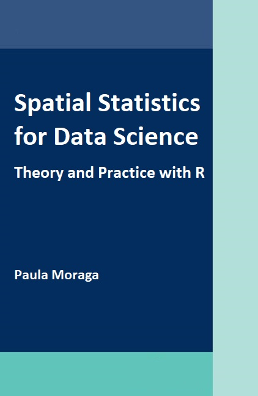

Welcome
Mapping and Modelling Geographic Data in R

About the course
The contents of this course were first developed for a short course at the University of Cape Town (UCT) in August 2022. It also forms part of the MSc Geographic Data Science and Spatial Analytics in the School of Geographical Sciences, University of Bristol.
The aims of this course are to teach an introduction to mapping, spatial analysis in R. It is a course in geographic data science with a particular focus on mapping, measuring and modelling spatial patterns in data. The core parts of the course are:
- Why use R for mapping and spatial modelling?
- The basics of mapping in R
- The Spatial Variable: from maps towards models
- Spatial clustering and spatial heterogeneity: measuring patterns in data
- Harnessing spatial autocorrelation with geographically weighted statistics
- Spatial regression models

This is a work in progress
Changes will be made and additional content added over time so check back here for the latest updates.
Course text
The most relevant texts for this course are:
First, parts II (Chapters 7 to 9) and III (Chapters 10 to 17) of Spatial Data Science with Applications in R. An online version of the book is available here. It takes a deeper dive into the fundamentals of spatial data science than this course does and is more ‘technical’ but is a good resource to extend your knowledge of geographical/spatial data science.

Second, Chapters 2, 3, 5, 7 and 8 of of Spatial Data Science with Applications in R. An online version of the book is available here.

Pre-reading
The following short pre-reading is recommended for the course:
Harris RJ (2019). Not just nuisance: spatialising social statistics. In A Whitworth (ed.) Towards a Spatial Social Policy: Bridging the Gap Between Geography and Social Policy. Chapter 8. Bristol: Policy Press. Available here (or, if that doesn’t work try here).
Other useful resources
Spatial Regression Models for the Social Sciences covers similar statistical ground to this course, For University of Bristol students, it is available to view as an eBook here.

In addition, Geocomputation with R by Robin Lovelace, Jakub Nawosad & Jannes Muenchow offers an extremely useful reference to have to hand if you are stuck when undertaking geocomputation with R. There is a free online version available.

Provisional Masters programme
For the 2023-4 iteration of the Masters unit, the teaching schedule is:
| Week | Date | Lecture | Practical | Content |
|---|---|---|---|---|
| 1 | - | - | - | - |
| 2 | Mon Oct 2 | 11am - noon | 2 - 4pm | Why R and set-up practical |
| 3 | Mon Oct 9 | - | 1 - 3pm | Flavours of R |
| 4 | Mon Oct 16 | 11am - noon | 1 - 3pm | Mapping the spatial variable 1 |
| 5 | Mon Oct 23 | - | 1 - 3pm | Mapping the spatial variable 2 |
| 6 | - | - | - | - |
| 7 | - | - | - | - |
| 8 | Mon Nov 13 | 11am - noon | 1 - 3pm | Measuring spatial autocorrelation |
| 9 | Mon Nov 20 | 11am - noon | 1 - 3pm | Geographically Weighted Statistics |
| 10 | - | - | - | - |
| 11 | Mon Dec 4 | 11am - noon | 1 - 3pm | Spatial regression + opportunity to work on assessment |
| 12 | Mon Dec 11 | 11am - noon | 1 - 3pm | Geographically weighted regression + opportunity to work on assessment |
About the author
This course is authored by Richard Harris, Professor of Quantitative Social Geography at the University of Bristol. You can find out more about me, my research and other interests at https://profrichharris.github.io/. It is taught at the University with the assistance of Dr. Richard Timmerman.


Copyright notice
This work is licensed under a Creative Commons Attribution-NonCommercial-ShareAlike 4.0 International License.


@GeogBristol #justsaying!